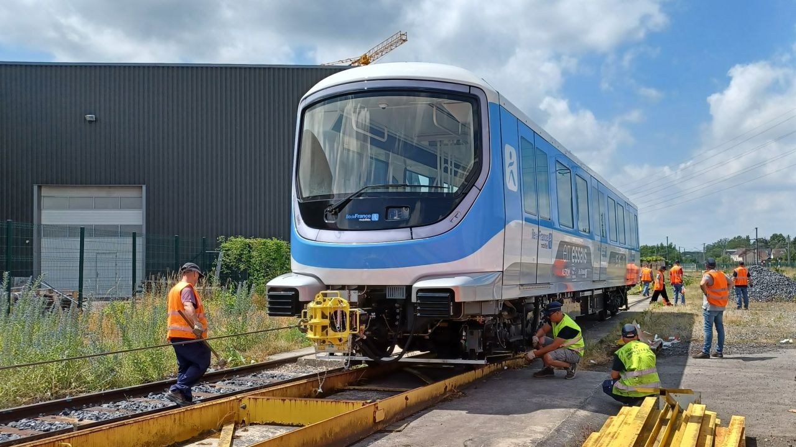

La ligne 19 du métro de Paris est un projet de ligne de métro automatique en rocade qui pourrait relier Nanterre
(Hauts-de-Seine) à Gonesse (Val-d'Oise) à l'horizon 2040. Le projet est inscrit dans le schéma directeur environnemental
pour élaborer le projet de territoire de la région à l’horizon 2040 (Sdrif-e), adopté en juillet 2023. Il est présenté
publiquement en novembre 2023 par Valérie Pécresse, présidente du conseil régional d'Île-de-France, et Marie-Christine
Cavecchi, présidente du Département du Val d'Oise. L'objectif est d'améliorer la desserte du département du Val-d'Oise,
en grande partie laissé à l'écart du Grand Paris Express.
Lors de la planification du Grand Paris Express, certaines critiques font état de la très faible desserte du
département du Val-d'Oise par les quatre nouvelles lignes de métro. Seule la station Gonesse y est envisagée,
et encore est-elle fortement contestée. En 2021, le Département du Val d'Oise lance une étude exploratoire pour une ligne
de métro desservant le Val d’Oise entre l’aéroport Paris–Charles-de-Gaulle et le secteur de La Défense . Le 3 avril 2023, alors que la construction
des nouvelles lignes du Grand Paris Express a commencé, Valérie Pécresse annonce, lors de la présentation des rames rénovées
de la ligne 6, qu'une future ligne 19 sera inscrite au SDRIF ; elle précise que cette nouvelle ligne est une demande
formalisée par le Conseil départemental du Val-d'Oise.
Le trajet prévu initialement relie Nanterre, au sud-ouest, à Saint-Denis, au nord-est, en desservant Argenteuil.
Une seconde phase étudiée envisage, à terme, la création d'une seconde branche allant d'Argenteuil à Cergy. Après cette
annonce, le conseil départemental ne souhaite pas s'exprimer et indique poursuivre les négociations avec la région
Île-de-France. Toutefois, lors d'une présentation du projet faite le 22 novembre 2023, Valérie Pécresse et
Marie-Christine Cavecchi présentent un tracé différent, dont la partie orientale ne se termine plus à Saint-Denis Pleyel
mais à Gonesse voire à l'aéroport Charles-de-Gaulle. La ligne alors prévue serait longue de 25 à 30 kilomètres pour 8 à 11
stations en fonction du tracé qui sera choisi, avec un tracé essentiellement souterrain. Au nord de Gonesse, la ligne pourrait partager les voies de la
ligne 17, permettant une liaison de Nanterre à Roissy CDG sans rupture de charge. La branche évoquée depuis Argenteuil
vers Cergy serait finalement un nouveau bus à haut niveau de service.
Matériel roulant :
Les rames du métro 19 seraient automatiques, et du même type que la ligne 17 : des rames MR3V de 3 voitures,
qui auront une largeur de 2,80 m et une longueur de 54 mètres, alimentées par caténaire, avec une capacité de 500 voyageurs environ,
les prévisions de trafic ne justifiant pas un métro de grande capacité.
Pour en savoir plus,
cliquez ici.